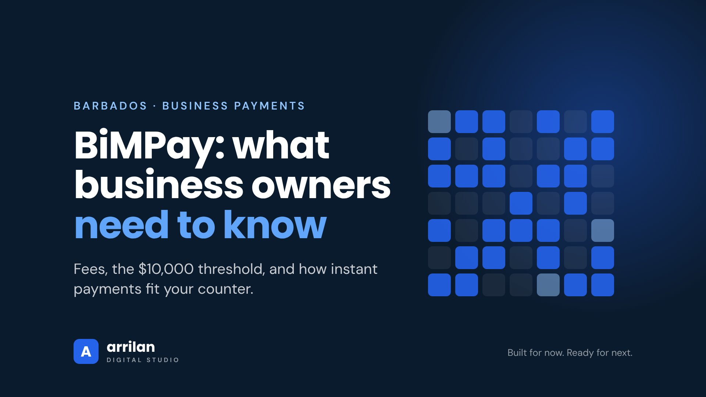

Blog / Payments
Free under $10,000 a day. Is your business using it?
BiMPay and Business Payments in Barbados: What Owners Need to Know

BiMPay is more than another way to send money. For businesses in Barbados, it's a chance to make getting paid easier, rely less on cash, and take a fresh look at what it costs to move money.
But there's still confusion about fees, the BBD $10,000 daily revenue threshold, and what BiMPay actually means for a business. Here's what owners should understand.
What exactly is BiMPay?
BiMPay is Barbados' national instant payment system, built by the Central Bank of Barbados and live since 12 June 2026. It moves money between participating banks and credit unions in under 10 seconds, 24 hours a day, every day of the year, including weekends and public holidays. The money is available to the recipient immediately.
BiMPay is the underlying payment infrastructure, the "rail." The BiMPay Wallet app is one way to use it. Banks and credit unions also build BiMPay into their own online banking and mobile apps, often under their own names.
Customers can pay using a registered alias, such as a mobile number or email address, or by scanning a QR code. Payment requests are supported too.
For businesses, the point is simple: customers can pay you electronically without you depending only on cash or card machines.
The nine participating institutions
BiMPay connects six commercial banks and three credit unions.
Commercial banks
- CIBC Caribbean
- First Citizens Bank
- RBC Royal Bank
- Republic Bank
- Sagicor Bank
- Scotiabank
Credit unions
- AffinityPlus Co-operative Credit Union
- Barbados Public Workers' Co-operative Credit Union
- City of Bridgetown Co-operative Credit Union
All nine are connected to the BiMPay rail, so payments flow between them regardless of where you or your customer banks. Smaller credit unions and other payment providers are expected to join in a later phase.
Support for linking an account to the separate BiMPay Wallet app has been rolled out institution by institution, so check with yours if you plan to use the wallet rather than your bank's own app.
The $10,000 opportunity
This is the detail business owners ask about most, and the Central Bank is clear on it.
BiMPay is free for individuals and for businesses whose revenue falls below BBD $10,000 per day.
Larger businesses may be charged fees, set by their own bank or credit union, not by the Central Bank.Two things are worth understanding.
First, the threshold is based on your business's daily revenue. It isn't about the size of individual transactions or only the money you receive through BiMPay. A business taking BBD $3,000 a day through BiMPay but BBD $15,000 a day in total revenue is above the line.
Second, it isn't tied to a particular SME registration. Don't assume you're excluded just because you aren't formally registered as a small business.
For businesses above the threshold, any BiMPay fee must be approved by the Central Bank and announced to customers before it takes effect.
Why the cost question matters
Consider a business that takes in BBD $5,000 in customer payments a day. If those payments went through a card provider charging an illustrative 2.5% merchant fee, that would be:
This is an illustration, not a claim that every Barbadian merchant pays 2.5%. Actual card rates depend on the provider and the merchant agreement.
It does show why BiMPay deserves attention. Every customer who chooses to pay through it instead of by card is a payment you may be able to receive at lower cost.
Who is actually charging these fees?
Much of the confusion starts here.
The Central Bank does not charge anyone to send or receive a BiMPay payment, and it receives no share of any fee an institution charges.
Businesses should also separate a BiMPay transaction fee from the other services their bank provides. Account maintenance, payroll processing, supplier payments and other banking arrangements are separate matters. A charge on one of those shouldn't automatically be read as a new BiMPay fee.
When in doubt, ask your bank or credit union for a clear breakdown: what is being charged, how it's calculated, and whether it's a BiMPay transaction fee or an existing service charge.
How does BiMPay relate to CIBC 1stPay+?
Many owners already know CIBC's 1stPay.
CIBC has expanded it with 1stPay+, which is powered by BiMPay. It lets CIBC customers send and receive money by alias (mobile number or email), account number or QR code with customers at other participating banks and credit unions. The original 1stPay continues for CIBC-to-CIBC transfers.
Other institutions are doing the same under their own names. That's how BiMPay is designed to work: shared infrastructure that each institution builds into its own banking services. Your customers don't need the separate BiMPay Wallet app to pay you.
Five misunderstandings to avoid
- "I need to be registered as an SME to qualify."
The threshold is based on daily revenue below BBD $10,000, not a specific SME registration.
- "BiMPay means all bank fees are going away."
No. BiMPay is free for individuals and businesses under the threshold, but other banking services can still carry charges.
- "My customer must bank where I bank."
No. Interoperability is BiMPay's core feature. Payments move across all participating banks and credit unions.
- "BiMPay is only for sending money to friends and family."
No. It's built for payments between individuals, businesses and government, including paying small businesses for goods and services.
- "BiMPay will make card machines unnecessary."
Not for most businesses. The BiMPay Wallet isn't available to tourists and other visitors without a Barbadian account, so card acceptance still matters for anyone serving international customers.
Where is the bigger opportunity?
It goes beyond putting a QR code on the counter.
For restaurants, cafés, salons, independent retailers, tradespeople and service providers, a fast, lower-cost payment option can improve the whole payment experience.
A restaurant can display a QR code at the table or counter. A tradesperson can send a payment request the moment a job is done. A small retailer can offer an alternative to cash for customers who'd rather pay from their phone.
There's also an opportunity for local technology providers. Businesses need practical ways to fit instant payments into how they already work: payment confirmation, order management, bookkeeping, sales reporting and reconciliation. The simpler those become, the more useful instant payments are to businesses without dedicated accounting or IT staff.
One practical note: BiMPay Wallet users have daily transaction limits, while customers paying through their bank's own app usually have higher ones. That's worth knowing if you handle larger tickets.
The Central Bank has also said it plans to expand BiMPay to cross-border payments in future. Keep an eye on the rollout rather than assuming every feature is already available.
Should you replace your card machine?
For most businesses, treat BiMPay as an additional payment option, not an immediate replacement.
A business serving mainly local customers may find it worth actively encouraging BiMPay. A hotel, restaurant or tour operator serving visitors will still need card acceptance.
The right call depends on your customers, your transaction costs, how people prefer to pay and how your business runs. Compare your current merchant fees and banking charges with what your institution offers, and plan how BiMPay payments will be confirmed and recorded so a new payment method doesn't create extra admin.
The conversation to have now
BiMPay is a significant step for Barbados' payment infrastructure, but its real value depends on how widely businesses and customers adopt it.
For smaller businesses especially, the fee exemption is a reason to take a closer look. Faster payments, less dependence on cash and potentially lower processing costs are practical benefits worth exploring.
Your next step: talk to your bank or credit union, understand the options on your existing banking platform, and decide how BiMPay fits into your daily operations.
The payment landscape in Barbados is changing. Businesses that understand their options early will be best placed to benefit.
This article is general information, not financial advice. Fees and features may change; confirm details with your financial institution and the Central Bank of Barbados.